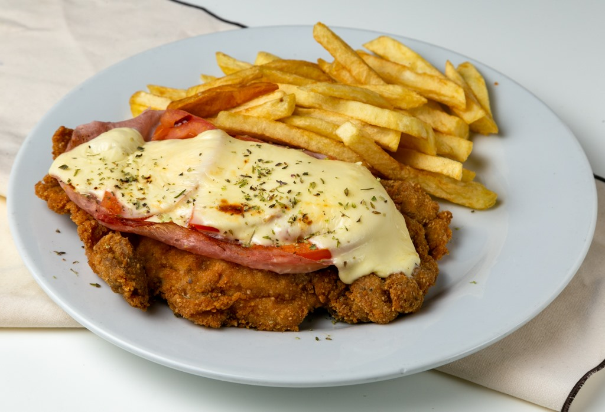

Home
Argentinian Milanesa Napolitana

Description
Milanesas is one of the national dishes of Argentina and there are many different versiones. Originally we make them with beef but chicken is also popular. It is basically a breaded fried steak
This version is topped with ham, tomato sauce, and cheese. It can be served with either french fries or creamy mash potato
Try this recipe, you are not going to regret it!
Ingredients
- 4 thinly sliced skillet steaks
- 3 large eggs
- 1 teaspoon oregano
- salt and freshly ground black pepper to taste
- 2 cups fresh bread crumbs
- 1/4 cup grated Parmesan cheese
- 2 cloves garlic
- 1/3 cup olive or vegetable oil
- 1/2 cup tomato sauce
- 4 slices deli ham
- 1 cup grated mozzarella cheese
- french fries, for serving
Steps
- Place eggs in a bowl and whisk together with oregano, salt and pepper
- Stir garlic into bread crumbs and place in another pan
- Dip steaks first in egg mixture, then in bread crumbs, coating well with crumbs
- Heat oil in a skillet, and fry steaks for several minutes, until golden brown and crispy. Drain steaks on paper towels
- Place steaks on a baking sheet. Turn on broiler
- Top each steak with a slice of ham, 2 to 3 tablespoons tomato sauce, and mozzarella cheese. Place steaks under broiler until cheese melts
- Serve warm, with fries. Enjoy!